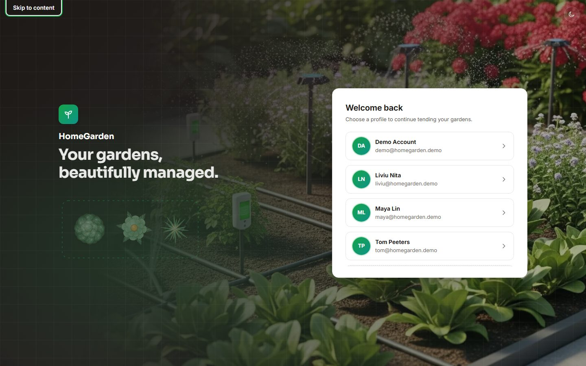
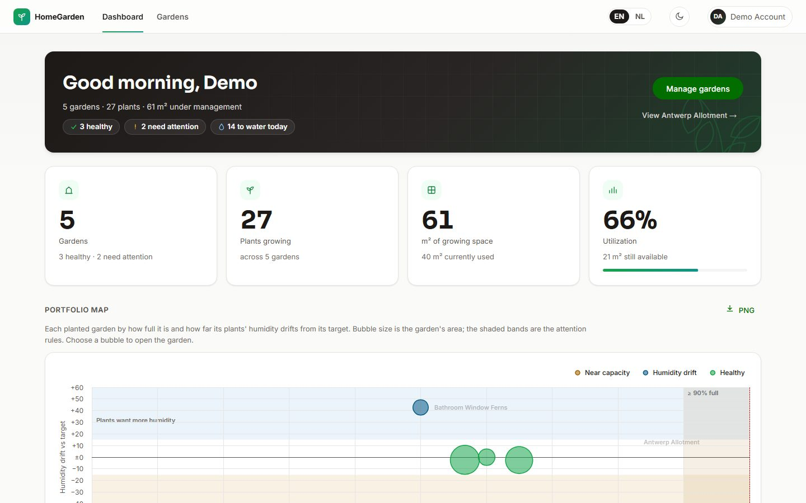
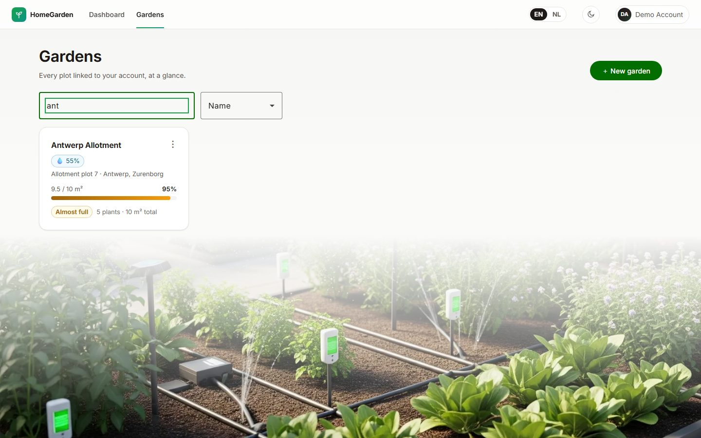
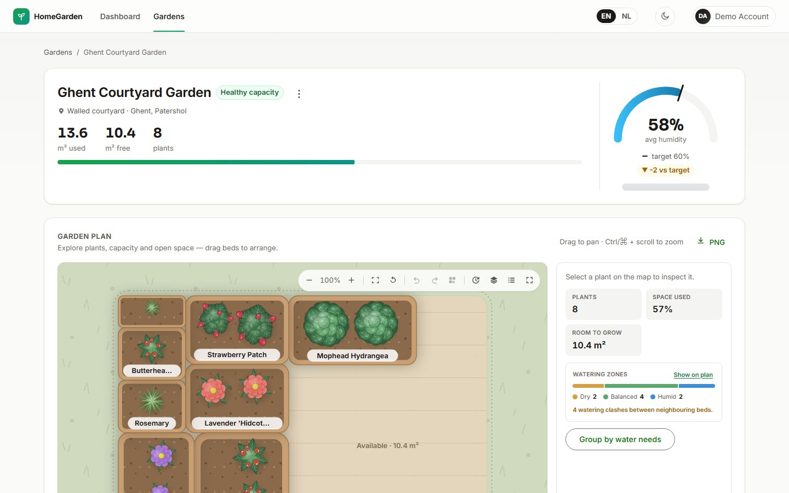
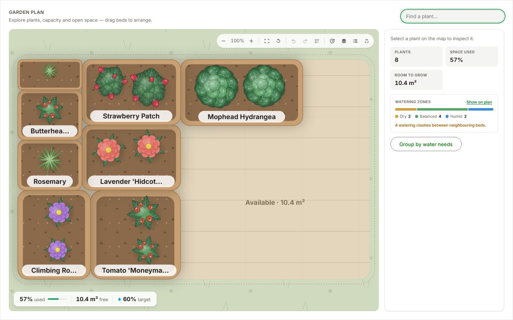
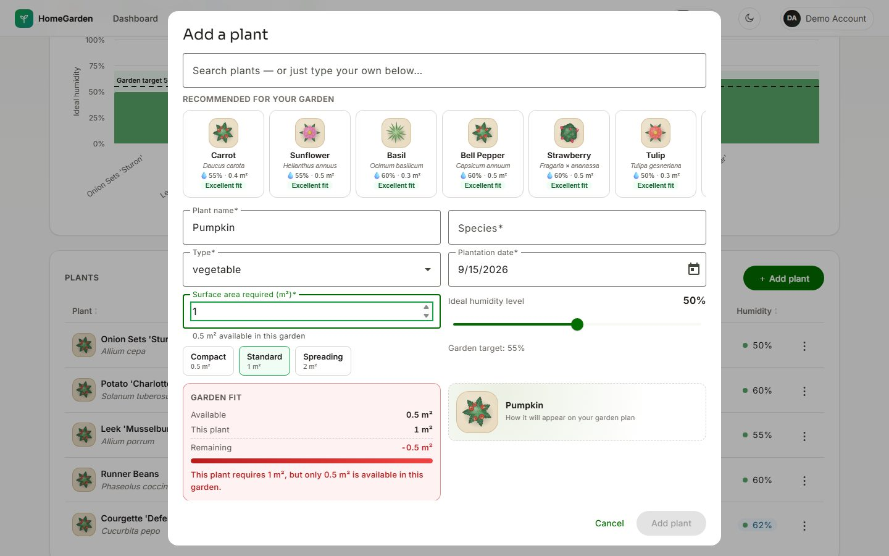
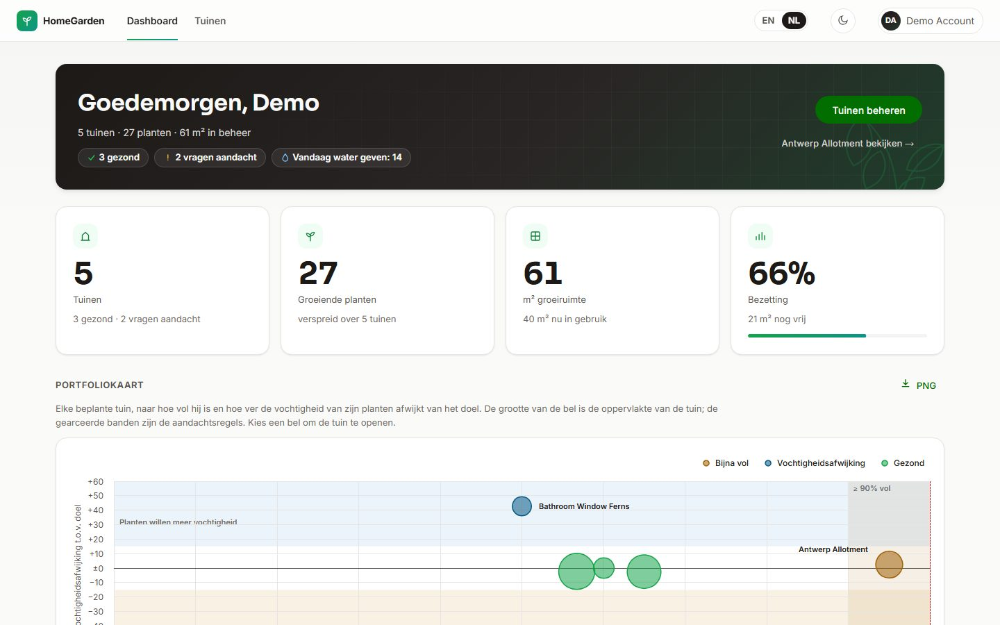
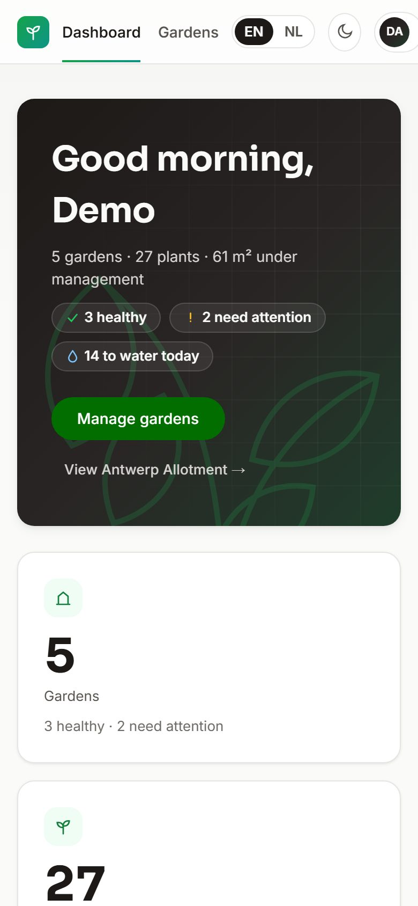

HomeGarden
An Angular 22 product on a deliberately slow, deliberately flaky API — built like it ships.
A simple domain on a hostile backend
Gardens, plants, a target humidity and one rule: the plants in a garden may never need more surface than the garden has. The interesting part is the API.
200 – 2000 ms
Every response is delayed on purpose. Nothing may block the screen while it waits.
1 in 10 requests fails
A three-request screen would break 27 % of the time. Failure is the normal case.
Design for it, don't hide it
Cache, retry, skeletons and ghosts — and never a spinner, never a lie about the data.
Every dependency earned its place
Straight from package.json — the latest of each, and nothing that isn't used.
Signals, @defer, Signal Forms, standalone everything.
Structure without ceremony: withProps, withLinkedState, signalMethod.
Themed to the product; the CDK for focus traps and test harnesses.
Two charts, loaded on demand, with the accessibility module.
Exact optional properties, strict standalone, typed host bindings.
Web, API and e2e as one workspace, one install, cached targets.
Unit, component, three e2e projects, WCAG scans on every story.
The API's schemas are the client's types — one contract, inferred.
Dependencies only point down — and lint says so
Five layers, each testable alone. The boundaries are not a diagram in a document: they are ESLint rules that fail the build.
Signals all the way, with the library's own idioms
Change detection only where a signal changed
No zone.js in the bundle. Every derived value — used area, occupancy, drift — is a
computed(), never stored where it could go stale.
Three stores, three scopes
withProps for collaborators, withLinkedState for what
resets with a key, signalMethod to follow the route,
withHooks on destroy. Mutations return typed verdicts.
The model is a signal, the rules a schema
The garden and plant dialogs on @angular/forms/signals; the capacity
rule is a validator that judges as you type — the same function the server runs.
DTO types inferred from the API's zod schemas
A schema change is a compile error on the client. Type-only, so nothing of the API reaches the browser.
A flaky API, handled once — in one place
Idempotency-Key and
the API replays a completed one from memory: a lost answer never creates
twice.
A bundle the CI keeps honest
bundle:check diffs every chunk against a
committed baseline in CI
Each layer proves something different
waitForTimeout calls, or DOM-of-Material queries: Material is
driven through CDK harnesses
Lint and typecheck → API tests → web tests with the coverage gate → production build with budgets → bundle diff → Storybook + axe → Playwright ×3 → a container image, started and checked in both languages.
“blocks an over-capacity plant client-side and never calls the API”, “a DELETE that keeps failing: ghost while retried, then the plant is back with a retry”.
A stylesheet with an architecture, two languages, WCAG 2.2
Tokens → abstracts → layers
- Every colour, size and z-index is a token; the dark theme is a remap
- A breakpoint map, one card recipe, one zone-colour mixin
@layer: the foundations can never outrank a component- The shared kit is named in BEM
English and Dutch
- Compile-time i18n: one build per language, no runtime, no flash
- 517 messages, the catalog checked in CI
- Dutch numbers and dates from the locale
- The Dutch build boots in its own e2e project
Tested, not declared
-
Skip link and a
mainlandmark on every page; focus follows navigation - The planner's beds are real focusable SVG elements; the plan also exists as a table
- The fullscreen planner traps and returns focus like a dialog
- axe on every screen in both themes
The product
Welcome, dashboard, gardens, a garden and its planner — every screen designed for the slow path as much as the happy one.
Welcome — choose a profile, or create one inline

First Tab: the skip link, on every pageDashboard — “which garden needs me?”, answered first

Greeting, KPIs, needs attention, portfolio map, garden health, water todayGardens — every plot at a glance

Search and sort — the result count is announced to screen readersA garden — the numbers, the gauge, the plants

Header stats, humidity gauge, outdoor reading, then the plan and the plantsThe planner — capacity you can see

Every bed at its real m² — a 98 %-full garden looks 98 % fullAdding a plant — recommend, pre-fill, and stop what won't fit

The rule judges while you type — and the server agreeswouldOvercrowd runs in the form, the store and the server;
the verdict describes its field for screen readers.
The slow path, designed
 Read: content-shaped ghosts — zero layout shift when data lands
Read: content-shaped ghosts — zero layout shift when data lands
 Write: the row ghosts in place until the server confirms
Write: the row ghosts in place until the server confirms
 Fail: an honest state, a retry — never a stale screen pretending
Fail: an honest state, a retry — never a stale screen pretending
In Dutch, in the dark, on a phone

/nl/ — the same build, compiled in Dutch, Dutch numbers included Dark theme: a token remap, not a redesign
Dark theme: a token remap, not a redesign

375 → 1920 pxThree minutes in the real app
npm run demo → http://localhost:8080 — the production build, a fresh
database, the demo data, the hostile API on.
Thank you
Questions — or pick any screen and we go through the code behind it.